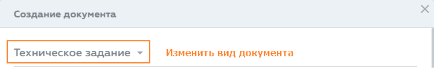

Документ невозможно удалить, если: •документ подписан; •документ участвует в незавершённых процессах или поручениях; •у пользователя не хватает прав на удаление документа. Для удаления документа у пользователя должны быть права доступа как минимум: •"Удаление" (Delete) – на документ, который пользователь планирует удалить. •"Создание версий" (Version) – на все папки, с которыми связан удаляемый документ. Например, если документ связан с папками других отделов, а у пользователя права́ доступа к этим папкам меньше, чем "Создание версий" (Version), то система не позволит удалить документ. |
В Riverdoc нет возможности удалить задачу – задачу можно завершить (выполнить) или делегировать другому сотруднику. В крайнем случае администратор системы может прервать процесс вместе со всеми задачами по процессу. При этом в истории незавершённой задачи будет записан статус "Прервана". |
Восстановить удалённый документ невозможно, можно восстановить только файл документа. Если возникнет такая необходимость, обратитесь к администратору с просьбой восстановить файл документа. Необходимо будет назвать дату и примерное время удаления, а также логин сотрудника, удалившего документ. |
В списке документов в столбце Дата создания для документов выводится дата и время создания последней версии документа. Дата регистрации документа в системе совпадает с датой создания первой версии документа (карточка документа → вкладка Версии → столбец Дата версии). |
Чтобы изменить вид создаваемого документа, в окне Создание документа нажмите на название текущего вида в верхней части окна.  Откроется окно выбора вида документа, выберите новый вид. После переопределения вида документа прикреплённый файл останется в карточке документа, а все поля, кроме Описание, необходимо будет заполнить вновь. |